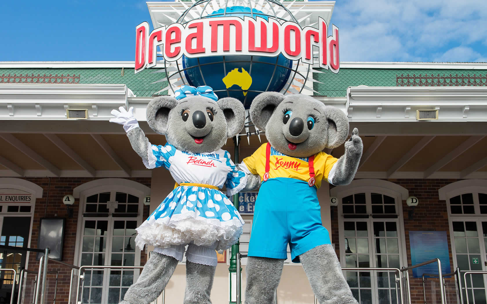
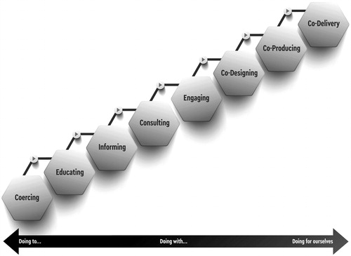

IThe university is one of the finest creations of European culture. Alas, as a troublesome fellow once said, all that is solid melts into air. I’m a bit shy of attributing things to a single cause. These things tend to built up over many, many decades. But certainly what might be called the moral collapse of universities, the collapse of morale among academics and the triumph of careerism has coincided with the slide into managerialism.
I’ve had my complaints about this in academia generally and in economics. However this post is in response to coming across an article which I was very keen to read because it dealt with a subject I think is of great interest and importance. Alas, I was at a loss to discover any real evaluative content in it whatever. Let me explain.
II
Since I first encountered them, I’ve regarded design — particularly co-design — and peer support as powerful means of escaping bureaucratic business-as-usual. Both are brought together in Family by Family an exciting departure for social policy which has nevertheless been left to safely languish on the periphery of our system for a decade.
So naturally, doing some work on the efficiency and effectiveness of helping people understand the best assistive technology options available to them, I was interested to learn of the existence of a similar combination of design and peer support with the additional feature of another modern phenomenon of great promise — social media platform (and yes, as we're coming to see, when it's harnessed for profit and clicks, social media is also a threat).
So I was keen to learn about “AT Chat” which describes itself as “a peer-led, co-designed community for assistive technology (AT) users to share information and lived experience about AT". It’s mission?
… to deliver a peer-led information and mentoring service that provides our community with the opportunity to build their AT decision making capability and share their expertise with each other and the broader community.
I then discovered a recent article in the academic journal “Disability and Rehabilitation: Assistive Technology” with this title “Co-creating an assistive technology peer-support community: learnings from AT Chat”. The kinds of questions I’d like to see researchers tackling regarding such ventures include:
- What are the strengths and weaknesses of co-design compared with more traditional delivery methods and can we come to any general conclusions? If not, how do we tell good from bad in co-design and in more traditional methods?
- Ditto between peer and professional support? In so far as there are differences, are peer and professional support compared on a ‘level playing field’. That is, not only do professionals earn a pay-cheque but they are backed by substantial organisational resources. How much better might peer support be if supported in similar ways? What is the effect of paying mentors on their status as peers. And how much benefit might be generated by building effective education pathways from peer-support to professional standing.
- What opportunities and threats to effective collaboration arises from the greater social distance between people when they encounter each other online compared with in person. (This is an important reason why sampling methods of democratic deliberation seem to work better in person than online).
Alas that’s not what’s in the article.
III
No doubt I’m being unfair to the authors, because I can’t really understand what the purpose of the article is. Anyway, this is how the abstract describes its purpose:
Inclusion is a core philosophy for health practitioners and human service users, and co-production is a way to achieve inclusion. Australia’s assistive technology (AT) community seeks to include and amplify the voices of service and product users at multiple levels. Implementation of genuine partnerships for inclusion is however challenging. This paper describes the iterative co-design process undertaken to structure and deliver a peer-led information and support program, enabling AT users and supporters to build their AT decision-making capability and share their expertise with each other and the broader community.
So it seems it's not marketing itself as an analysis or evaluation of anything much, but since numerous academics were involved in this exercise, one might have hoped that they were able to contribute some insights owing to their scholarly background. But one would be wrong. The purpose of the article does say it’s a “description” and not an analysis, and that’s very much what it is. But that doesn’t explain what it’s doing in a learned journal. Ten footnotes are knocked off in the first two introductory paragraphs.
The World Health Organization position paper on assistive technology (AT) personnel calls on professionals to “work in collaboration with people using AT services to improve coordination and communication, remove organizational barriers, and achieve best outcomes” (p. 446). The paper points out that contextually relevant and culturally sensitive education pathways are an opportunity to develop capacity in AT users and caregivers, and to diversify the workforce [1].
Substantial evidence demonstrates that the voices of service or product users are essential at multiple levels, for example in public health policy [2], mental health service delivery [3], health technology design [4] and engineering [5]. Service users are best placed to comment upon how a product or service worked for them, to evaluate their user experience, to design the user interface, to advise on safeguarding and to determine whether the product or service has met their personal needs. International work has been undertaken to operationalize inclusion through co-production [6–8], to demonstrate its outcomes [9] and to enshrine consumer participation in research [10].
And on it goes. The “Methods” section is introduced thus:
This research had ethical approval from Swinburne University Ref: 20212662-6393. Three strategies were utilized to structure and deliver the peer-led information and support program. These were: (a) embedding co-design in the service team structure, (b) development of a risk-informed, competency-based and capability-enabled understanding of AT and (c) living labs to research and develop the service design.
Nice to know no muskrats were tortured and that counsellors were on hand to address any research induced trauma. Owing to budget cuts this blog post did not receive ethics approval from any academic body, though I did get approval from the Imagineers of Troppo’s Ethics Mountain roller coaster soon to undergo imaginary prototyping at DreamWorld on the Gold Coast.There follows a description of the project. But at every turn, particular frameworks, templates and standards are appealed to as self-evidently appropriate. Evaluation of their appropriateness, conceptual clarifications, trade-offs don't seem to get a look in.
A living labs approach was grounded in co-design principles and drew on the peer education, AT competency and capability-building knowledge base. Methods included embedding intersectional capabilities within the service, and the engagement of over 600 people in design thinking and program iterations through surveys, focus groups, journey mapping and think tanks.
The closest I could find to any research question or evaluative exercise was signalled by this paragraph.
A key question in considering a peer versus professionalized workforce concerns the limitations of a peer mentor capabilities. Specifically, whether mentors can step out of their personal experiences about “what worked for me” in order to stand with the mentee to establish “what might work for you”. Yet, emerging evidence supports diverse skillsets beyond professionals taking a range of roles within the provision process. Examples include peer specialists in veterans’ health services [21], in prosthetics [22], in wheelchair training [23] and in lieu of professional staff in low- and middle-income settings [24].
Founded on the philosophical position of capability recognition and a commitment to co-production, this project applies this evidence within the AT provision process, to explore AT peer mentorship and role delegation. Suitable methodologies were then sought to translate this knowledge into a working model for AT peer support.
And so it goes. There are tables, and silly, question-begging diagrams like this: Figure 1. The ladder of participation.

And here are the 'Conclusions'.This paper describes the philosophical underpinnings of development of an online platform and peer support network. The co-design ethos involved critical evaluation of the roles of AT users and professionals, and the transformation of AT service delivery steps into accessible, evidenced-based resources. A living laboratory method journey-mapped a range of AT pathways and determined the scope of AT peer mentor roles in relation to AT complexity levels, and their own experience of AT. Evaluation of a peer-mentor pilot demonstrated increasing capacity in AT users to independently source information, construct an AT solution, and make informed decisions. The AT community actively engaged in developing roles for peers based on AT service delivery steps. Substantial scope exists for the development of a peer support workforce. From a service planning perspective, having a peer mentoring thread delivers competency sharing, enhances team-functioning and provides a pathway for allied health professionals to exchange knowledge with AT users based on lived experience.
As far as I could see nothing was analysed. No evaluative judgements were set out and defended. Nothing was contested. Things were described and asserted. That's pretty much it. Most peculiar.
'What's content got to do with it?' (Apologies Tina Turner). You don't need to read it - if it got more than 5 citations it is an excellent piece of research.
The problem is that you want outcome data that is well, outcome data, and analyses that is sensible. The problem is that in some of these areas, the idea of what an outcome is happens to be different to yours and where to start your analyses is too. A simple example is that if you want some kid to learn something, you'd probably want to know if they learnt it. But this is not how these fields work. The outcome might be that they participated in social learning to do it, and in some areas of education, that's considered the best outcome (even if they learnt nothing, which you wouldn't know because no-one measured it). This sort of stuff is no different to many of the reports governments contract incidentally -- it's not just academia. The outcome of many studies, according to these reports, is something like: "it seemed very good". For that, matter, even in economics you can start with odd assumptions, then end up thinking NINJA loans are a good idea because they agree with underlying theory. You are clearly too stuck in the land of reality!